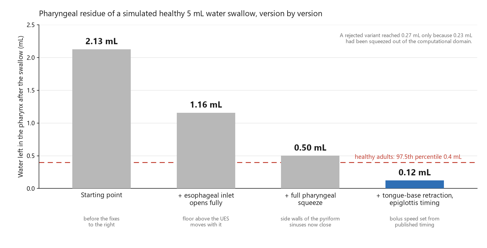
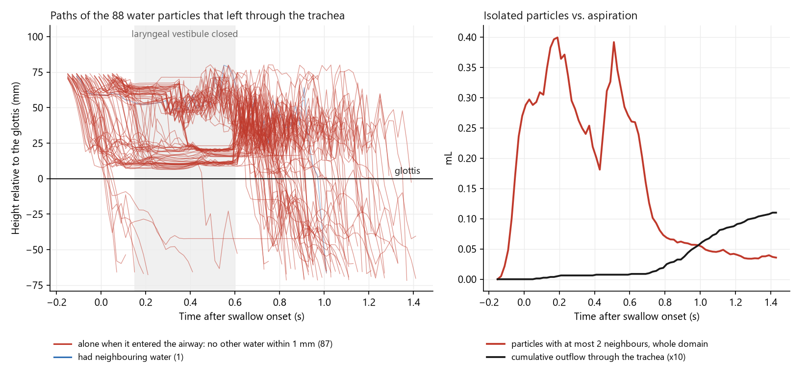
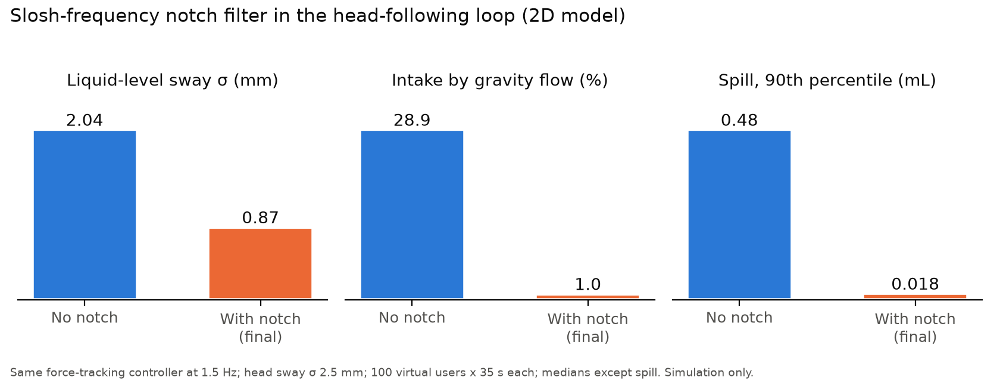
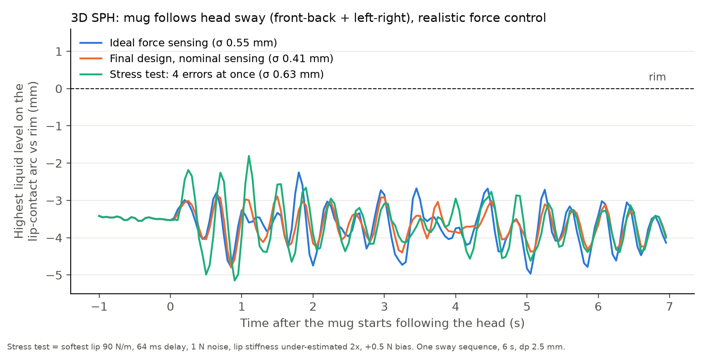
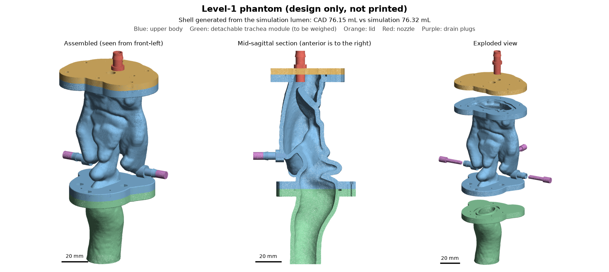

Robot-assisted care · simulation and design · platform in progress, no manuscript
A robot arm could hold a cup for someone who has trouble swallowing, but nobody should tune it on a patient. So I built a virtual one: 40,000 water particles swallowed through a throat taken from a real CT scan, moving on a literature timetable. Its first version left 2.13 mL of a 5 mL sip stuck in the throat; after the motion errors were found and fixed one by one, 0.12 mL remains, inside the healthy reference of 0.4 mL. The other healthy test, zero water into the airway, still fails. Everything here is simulation or design; nothing has touched a person, a robot or a printer yet.
Mu-Hua Wang · National Yang Ming Chiao Tung University · student research assistant in Prof. Yi-Ting Chen’s lab (Department of Computer Science, NYCU); advisor: Yi-Ting Chen · the code was written with an AI coding assistant (Claude Code)
The current baseline run (h13_tb_slow): 5 mL of water, upright, 1.6 s of
swallow, 40,000 fluid and 2,120,355 wall particles at 0.5 mm spacing. One run of a deterministic
simulation, not a statistic; it took about 28 minutes on one GPU. Geometry: Seifelnasr et al.,
Data in Brief 58:111204 (2025), CC BY 4.0.
first version → current; healthy reference ≤ 0.4 mL
healthy target is 0; this test still fails
isolated single particles, found by tracing each one
cup controller without → with slosh notch (2D, 100 users per cell)
A speech therapist’s prescription for someone with dysphagia has two kinds of rules. Some are set once before the meal: food texture, sitting posture. Others have to be enforced at every sip: how much goes in, and waiting until the last mouthful is swallowed. In a direct observation of 447 hospitalised older adults (Mateos-Nozal et al., 2022 — not my data), texture was followed 94.1% of the time and posture 88.4%, but the liquid sip size only 43.3%.
I walked through the care pathway step by step and listed every problem that a published number supports:
That gave 27 pain points, drawn from a 1,818-record literature library and an evidence table of 83 graded claims (559 rows). Robot arms that tilt a cup to a person’s mouth already exist (Schröer et al. 2015; Alwala et al. 2022, 2023), and swallow detection has been wired into a feeding robot (Ling et al. 2025). What I could not find in the literature I searched is a way to test the delivery itself — cup, sip size, speed, head angle — against a swallow. That is what the rest of this page builds.
A rating sheet asking speech therapists to score five candidate robot functions is ready; 0 have been returned, because it has not been sent yet. The ranking of pain points above is mine, not a clinician’s.
The throat is a real CT scan (one 18-year-old man) voxelised at 0.5 mm. The walls are 2.1 million particles that move on a prescribed timetable: the larynx rises and moves forward (trajectory from the ArtiSynth muscle model), the airway closes, the epiglottis folds, a constriction wave runs down the pharynx, and the upper oesophageal sphincter opens — with timings and amplitudes taken from videofluoroscopy studies of healthy adults. The water is a GPU weakly-compressible SPH solver written for this project.
The first version looked fine in a movie and failed on numbers: 2.13 mL of the 5 mL never left the throat. Scrub through both runs below.
Grey: first version (h2_thin, run to 2.0 s).
Red: current (h13_tb_slow, 1.6 s). Residue = oropharynx + valleculae + pyriform/hypopharynx.
Dashed line: healthy reference 0.4 mL.

Residue after a 5 mL water sip for each model version, one run each. h9_up reached
0.27 mL, but only because 0.23 mL was squeezed out of the computational domain; it was retracted.
I kept being wrong about why. Each fix came with a diagnosis, and two of them did not survive the next run. Narrowing the closing gap of the constriction wave barely changed the residue, so it was not a water film in the gap; moving the start of the wave upward made it worse and was rolled back. What actually worked was measuring the walls themselves: the side walls of the pyriform recesses were never told to move, the floor above the sphincter did not open with it, and the tongue base and epiglottis did not move as far as the measurements in Logemann (1992) say they should.
Healthy adults swallowing thin liquid aspirate nothing (Steele et al. 2019, 39 participants). The current baseline still sends 0.0125 mL — 100 particles — into the trachea. Rather than tune it away, I wrote a tracker that recovers each particle’s identity from snapshots (checked against stored identities: 0.12% mismatches over 1,145,012 particle-frames) and followed the 88 particles that left through the trachea back to where they came from.

87 of the 88 particles entered the airway alone (no more than two other water particles within
1 mm), at a median 1,624 mm/s, mostly after the larynx had reopened: single particles bounced off the
elastic wall, not a stream of water. One run (h13_tb_slow), not a statistic.
A deposition rule (an isolated droplet that hits a wet wall sticks) brings it to 0.001 mL in one run. That rule is inferred from droplet-impact literature, not measured in a throat, so the baseline is not declared passed.
Differences in aspiration smaller than 0.02 mL are reported as inconclusive; they are smaller than what this resolution can separate.
| Change from the healthy baseline (one run each) | Aspiration | Throat residue |
|---|---|---|
| None (baseline, water) | 0.0125 mL | 0.12 mL |
| Airway entrance closes only 50% (a sweep value, not a patient measurement) | +0.029 mL | inconclusive |
| Thickened liquid, IDDSI level 1 | inconclusive | 0.43 mL |
| Thickened liquid, IDDSI level 2 | inconclusive | 0.59 mL |
For people who can swallow but cannot use their hands, a robot that pours sets the pace for them. The controller here does the opposite: it follows the head with the cup, keeps the liquid level just below the rim, and lets the person sip. Following a moving head shakes the cup, and the liquid sloshes, so the reference trajectory is passed through a notch filter at the cup’s first slosh mode (2.95 Hz, Q 2) before a 1.5 Hz tracking loop. Lip position is estimated from the lip force read through the arm’s joint torques.
Same 6 s head-sway sequence, front–back motion only, DualSPHysics 3D SPH. Tight camera tracking at 4 Hz: lip-side level σ 3.06 mm. Force tracking with the notch at 1.5 Hz (ideal force sensing): σ 0.54 mm. One sway sequence, not a statistic.

Same force-tracking controller at 1.5 Hz, with and without the notch, in a 2D model with rule-based virtual users (head sway σ 2.5 mm; 100 users × 35 s per cell; medians except spill, which is the 90th percentile). “Intake by gravity flow” is liquid that ran into the mouth without the user sipping — what holding the rim is meant to prevent.

3D SPH check with both front–back and side sway: lip-arc level σ 0.55 mm with ideal force control, 0.41 mm for the final design with realistic delay and noise, 0.63 mm when delay, noise, a lip stiffness estimate off by half and a force bias all happen together. One 6 s sway sequence.
| Injected fault (100 users × 20 s per cell) | Naive response | Response kept |
|---|---|---|
| Noisy lip force, clipped at zero before filtering: noise rectifies into a bias and the cup drifts away (time unsealed while drinking, median) | 82% | 3%filter first, then clip |
| Lip-force signal drops to zero: the arm thinks it lost contact and pushes (peak lip force, max) | 18.9 N | 4.1 N0.25 s watchdog, back off 5 mm |
| Head suddenly drops (spill, median) | 1.57 mLno reaction | 0.00 mLtilt back in place |
The intuitive fix spilled the most. When the head drops, pulling the cup away feels safest. Doing that together with tilting back spilled a median 18.00 mL; tilting back in place spilled 0.00 mL. A fast translation throws the liquid out of an open cup.
Two task-level results came out of the same work. The mug is opaque, so the liquid level has to be inferred: geometry plus weighing gives a 95th-percentile error of 4.59 mm, recalibrating at the start of every sip brings it to 1.57 mm (Monte Carlo, 1,500 random cups per cell). And if the prescription asks for a chin-down posture, the face limits how far a cup can tilt: at 20° of head flexion an ordinary 90 mm-deep, 75 mm-wide cup leaves 43.4 mL that cannot be reached (geometry only, one face model).
A simulation needs something physical to disagree with. The phantom’s shell is grown from the simulation’s own lumen, so the printed cavity and the simulated one are the same shape: 76.15 mL in CAD against 76.32 mL simulated, slice-by-slice area differing by 0.57% on average (4.5% at worst, at the floor of the pyriform recess). A detachable trachea section is weighed to measure aspirated water.

Level-1 phantom, design only. An independent checker found 0 failed assembly checks across 11 parts and 5 head tilts. A print checker passed 75 of 90 parts and flagged 15 — all small thin edges or water troughs that are meant to hold liquid; 0 were unprintable, and every level-1 and mouth-module part passed. These checks cover ideal geometry only; a later pass found tolerance and timing problems still open.
Scope: simulation and design only. No robot trial, no participant, no printed part, no clinician has rated anything yet. The virtual patient is one person’s anatomy, with no oral phase in the baseline, no surface tension, and a laryngeal rise smaller than the literature value; it passes the healthy residue reference but not the zero-aspiration one. The cup controller results come from a 2D model with rule-based virtual users and one 3D sway sequence; how deep below the rim a person can still sip is a guess (1–3 mm) that has not been measured.